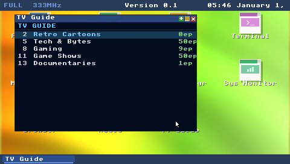
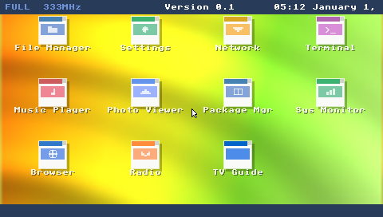
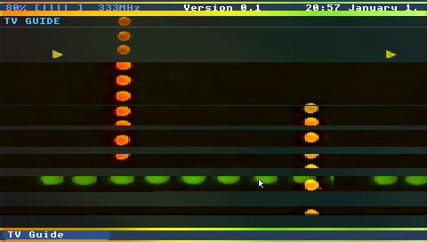

OASIS_OS is an embeddable operating system framework in Rust: window manager,
browser engine, terminal, 15 apps and 17 skins — rendering to a 333 MHz PSP,
a desktop window, a web page or an Unreal Engine 5 viewport.
Hand it a framebuffer and an input stream; it brings the rest.
▸ Recorded in the classic skin: draggable windows, the terminal, and
the TV Guide streaming video from the Internet Archive.
01 — What it is
A whole operating environment behind thirteen methods.
Not a UI toolkit: a complete shell — dashboard, windows, apps, a terminal, a browser —
written once against a small set of backend traits. Core code never calls a platform API.
1
Bring a surface
A GPU window, a <canvas>, a game texture or a 2004 handheld’s
framebuffer. Anything that can fill a rectangle and show a frame.
2
Implement the contract
SdiCore’s 13 required methods plus InputBackend::poll_events.
One macro line fills in eight extension traits — 46 default methods for shapes,
gradients, text, textures, clipping, vector paths, batching and render targets.
3
Get the whole shell
Windows, skins, the terminal, the browser and every app run unchanged on your
surface — or skip Rust entirely and drive it from C through oasis-ffi.
/* Any C-compatible host: link oasis_ffi (.dll / .so / .dylib) */OasisInstance* os = oasis_create(480, 272, NULL, NULL, NULL);
while (running) {
OasisInputEvent ev = {0};
ev.event_type = OASIS_EVENT_BUTTON_PRESS;
ev.key = OASIS_BUTTON_CONFIRM;
oasis_send_input(os, &ev);
oasis_tick(os, 1.0f / 60.0f);
if (oasis_get_dirty(os)) {
uint32_t w, h;
constuint8_t* pixels = oasis_get_buffer(os, &w, &h);
upload_texture(pixels, w, h); /* RGBA, w*h*4 bytes */
}
}
char* out = oasis_send_command(os, "ls /home");
oasis_free_string(out);
oasis_destroy(os);
// crates/oasis-app-core/examples/stopwatch_app.rs (excerpt)implAppforStopwatchApp {
// title, path, lines, layout, draw_windowed, drain_requests, ...impl_content_app_methods!(content);
fnhandle_input(&mut self, button: &Button, _vfs: &dynVfs) -> AppAction {
match button {
Button::Cancel => returnAppAction::Exit,
Button::Confirm => self.running = !self.running,
Button::Square => self.laps.push(self.elapsed_ms),
_ => returnAppAction::None,
}
self.rebuild_lines();
AppAction::None
}
fntick(&mut self, dt_ms: u32, _vfs: &dynVfs) -> bool {
if !self.running { returnfalse; }
let before = self.elapsed_ms / 100;
self.elapsed_ms += u64::from(dt_ms);
// redraw only when the displayed tenth changes
self.elapsed_ms / 100 != before
}
}
Embeddable by design
Backends are leaf crates; the shell is a library you tick.
Skinnable to the bone
Layout, chrome, strings and shaders are TOML; a theme derives from nine colors.
Actually useful inside
A from-scratch browser, 110+ commands and builtins, video, radio — 15 apps.
Drivable by agents
An opt-in, loopback-only MCP server opens apps, runs commands and takes screenshots.
02 — Platform targets
Same shell, five very different screens.
Each backend maps rendering, input, audio and networking onto whatever the host provides.
Same apps, same skins, same terminal — from a 4K monitor to a 4.3″ LCD.
Desktop
oasis-backend-sdl → oasis-app
SDL3 window, renderer, input and audio on Linux, macOS and Windows. SDL3 builds from source; no system SDL needed. Skins pick their own resolution — the XP skin above runs at 1024×768.
Video
ffmpeg (default) or openh264
JS
QuickJS-NG, on by default
Net
rustls TLS, remote terminal, MCP
Raspberry Pi
oasis-backend-sdl
The same SDL3 backend boots on a Pi as a field-deployable shell — a kiosk, a cyberdeck, and the design target for a tamper-responsive briefcase build.
Video
ffmpeg or openh264
Role
Kiosk / cyberdeck shell
Net
Remote terminal over PSK
andrewaltimit.github.io/oasis-os/demo/
WebAssembly
oasis-backend-wasm
Canvas 2D rendering, DOM input and HTML <audio> playback. Real web pages and YouTube play in an iframe overlaid on the canvas.
A software RGBA framebuffer behind a C ABI — oasis_create, oasis_tick, oasis_get_buffer — so in-game computers become interactive props.
Video
Optional oasis_video_* API
Files
GameAssetVfs with overlay writes
Link
cdylib: .dll / .so / .dylib

PlayStation Portable
oasis-backend-psp · oasis-plugin-psp
Native sceGu rendering on a 333 MHz MIPS with 32 MB of RAM. A shell EBOOT, plus a kernel-mode PRX that draws an overlay on top of running games. Captured on real hardware.
Video
Media Engine H.264 + AAC
JS
QuickJS-NG via psp-gcc
Net
Pure-Rust TLS 1.3
03 — Skin gallery
Seventeen personalities, zero code changes.
Every capture is an unretouched frame from oasis-screenshot at the skin’s
native resolution. A skin is a TOML directory in skins/, embedded at build time —
copy one, edit it, and hot-reload it with the skin-dev feature.
Tip: focus the list and use ←→ to flip through skins.
04 — Inside the shell
Subsystems built from scratch, then made small enough to travel.
Each subsystem is its own crate with its own tests — a browser engine, a window manager,
a scriptable shell, video and audio pipelines — and most of them are lean enough to run on a
32 MB handheld.
Apps
15
browser to paint
Commands
95
desktop build
Shell builtins
21
if · for · case
UI widgets
27
plus flex & grid
Shaders
8
GLSL + CPU each
Locales
7
en de es fr ja ko zh
oasis-browser · -html · -css · -http · -js
A browser engine, not a webview
Written from the parser up: WHATWG HTML, a full CSS cascade with var() resolved at
computed-value time, CSS Grid, 2D and 3D transforms with perspective, @font-face,
Canvas 2D and SVG — over HTTP/1.1 + HTTP/2 with an enforced CSP.
style.css · all parsed, cascaded and laid out natively
Drag, resize, minimize, maximize, edge snapping with previews, Alt+Tab, five tiling
layouts and open/close/minimize animations.
oasis-mcp
An MCP control server
Compiled out unless asked for. When on: Streamable HTTP on 127.0.0.1:7345,
Origin/Host checks, an optional bearer token, and tools like open_app,
run_command and screenshot.
oasis-terminal
A shell inside the shell
Pipes, globs, aliases, variables, if/while/for/case
scripts, background jobs, tab completion and persistent history — and commands that drive the GUI.
/home/user> ls music | grep mp3
ambient_dawn.mp3
nightfall_theme.mp3
/home/user> music play music/nightfall_theme.mp3
/home/user> open Text Editor notes.txt
/home/user> skin psix-hifi
oasis-video · oasis-audio
TV Guide & Internet Radio
Internet Archive channels streamed progressively through a sliding-window buffer with
deferred tail probing and CDN failover — decoded by ffmpeg, openh264, the browser, or
the PSP’s Media Engine.
oasis-ui
27 widgets
Buttons to tree views, modals, tables, date and color pickers — plus list views,
menu bars, nine-patch, focus navigation and flex/grid layout.
oasis-shader · -vector
Living wallpapers
Eight Shadertoy-style backgrounds, each with a GLSL and a CPU implementation, plus
resolution-independent vector icons.
oasis-vfs · oasis-net
Files & wires
Memory, disk and UE5 game-asset filesystems behind one trait; a PSK-authenticated remote
terminal; and typed VFS IPC (/var/audio, /var/wm) that scripts,
plugins and agents drive.
05 — Architecture
Layers in, backends out.
51 crates: 41 workspace members for desktop, WASM and UE5, the excluded PSP backend, and nine
standalone PSP-target crates. Everything above the trait boundary is platform-agnostic.
Hosts
oasis-app
oasis-ffi
oasis-usb-host
desktop shell · C ABI for UE5 · PSP USB host
Registry
oasis-apps
app table · host glue over core + app crates
Coordination
oasis-core
dashboard · agent · plugins · scripting
Apps
oasis-app-core
tv-guide
radio
media
file-manager
text-editor
paint
games
calculator
settings
system-monitor
Engines
oasis-browser
oasis-html
oasis-css
oasis-http
oasis-js
oasis-terminal
oasis-video
oasis-audio
Presentation
oasis-sdi
oasis-ui
oasis-wm
oasis-skin
oasis-vector
oasis-shader
oasis-rasterize
Services
oasis-vfs
oasis-platform
oasis-net
oasis-mcp
oasis-i18n
Foundation
oasis-types
oasis-test-backend
Color · InputEvent · geometry · errors · backend traits
Trait boundary
SdiCore 13 required rendering methods
SdiBackend 8 extension traits, 46 default methods
InputBackend buttons, keys, pointer, text
NetworkBackend TCP with pluggable TLS
AudioBackend tracks and streaming PCM
oasis-backend-sdlSDL3 · desktop & Raspberry Pi
oasis-backend-wasmCanvas 2D · HTML audio · browsers
oasis-plugin-pspkernel PRX · ~150 KB, no oasis-core
Crates depend downward; only the hosts also link a backend from below the line. Backends
implement the oasis-types traits; the PSP
overlay PRX stays standalone, without oasis-core, so it stays small (about 150 KB) beside a running game.
Not drawn: eight more standalone PSP tools — the recovery EBOOT, the dev loop, ME boot,
PRX decrypt and four USB client / debug / trace / VBUS crates.
OASIS_OS started in early 2026 as a love letter to PSP homebrew shells like PSIX. The
480×272 default resolution is the PSP’s LCD; the d-pad navigation never left. And the
PSP is still the hardest target in the tree.

△○✕□
OASIS_OS
Real PSP hardware, captured over WiFi with the TCP screencap command.

ME Archive.org video over TLS 1.3, decoded on the Media Engine.
CPU
333 MHz
RAM
32 MB
LCD
480×272
TLS
1.3
TLS 1.3 in pure Rust on firmware that ships SSL 3.0 and 2008-era root CAs.
Hardware H.264 through a reverse-engineered Media Engine RPC protocol — 22 command IDs, 47 NIDs — with a kernel watchdog for a firmware deadlock.
QuickJS-NG cross-compiled with pspdev’s toolchain against a hand-rolled libc shim.
Zero-touch development: WiFi deploy, remote input and screen capture, a 154 KB recovery EBOOT, and a relay-driven actuator for hard reboots.
Per-platform dependencies live in
docs/getting-started.md.
CI runs every step inside the rust-ci Docker image, so a local
docker compose --profile ci run matches it exactly.
# SDL3 compiles from source; default features link system ffmpeg
cargo build --release -p oasis-app
cargo run --release -p oasis-app
# pick any of the 17 skins
OASIS_SKIN=psix-hifi cargo run --release -p oasis-app
# run the tests
cargo test --workspace
# no ffmpeg dev libs (e.g. Windows): openh264 + symphonia instead
cargo build --release -p oasis-app \
--no-default-features --features javascript,video-decode
# leave out javascript for a build without QuickJS-NG
cargo build --release -p oasis-app --no-default-features --features video-decode